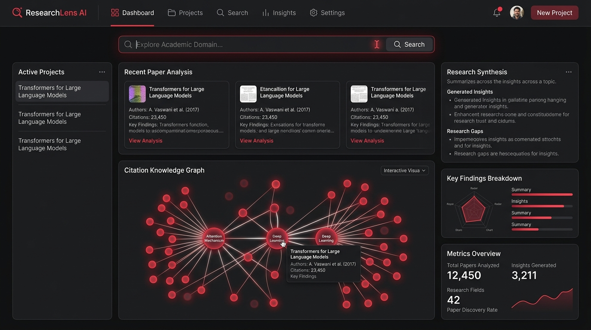

Concept Interface & Knowledge Graph

* Concept UI depicting the dynamic Citation Knowledge Graph, recent paper synthesis cards, and automated research gap identification dashboard.
The Core Problem
Where to Begin?
Students starting thesis work or capstone projects lack clear visibility into which sub-domains are saturated versus actively expanding with opportunities.
Vague Rationale
Researchers struggle to synthesize limitations across recent literature to justify why their specific investigation is novel and necessary.
100+ Hours Reading
Manually skimming through dozens of 20-page papers to locate methodologies, datasets, benchmarks, and conflicting findings consumes massive effort.
Platform Architecture & The Two Pillars
Key Platform Features
Interactive Citation Knowledge Graph
Visual network topology rendering how influential papers connect, cite each other, and branch into novel sub-domains.
Structured Literature Gap Synthesis
Automatically isolates limitations and future research recommendations from existing papers into actionable thesis questions.
Explainable Semantic Search
Dense vector retrieval matched against concept semantics rather than brittle keyword strings, surfacing cross-discipline insights.
Evidence-Based Direction Engine
Generates structured problem statements paired with exact peer-reviewed paper citations to back up research methodology.
Technology Stack
AI & Retrieval Backend
Frontend & Visualization
Development Roadmap
Interested in Collaborating on ResearchLens AI?
Whether you are a researcher looking to test early prototypes or an engineer interested in retrieval-augmented architectures, reach out.